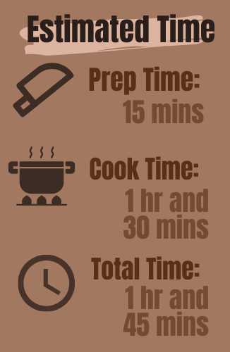
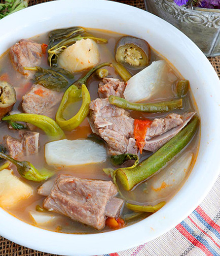

Cooking Nanay
Home
Dishes
Recipes
Recommendations
Pork Sinigang
A classic Filipino sour and savory soup that features pork ribs, vegetables, and tamarind-flavored broth.


Pork Sinigang Recipe
2 pounds pork liempo, cut 2 inches chunks
1 package tamarind sinigang soup mix
1 tomato, quartered
1 onion, quartered
1 taro(gabi), quartered
3-4 long green chili peppers (siling haba)
1 medium size radish (labanos), sliced
3 string beans (sitaw), cut in 2 inches long
1 eggplant, sliced
10 stems of kangkong leaves
fish sauce, to taste
Directions for Cooking
Rinse pork ribs and drain well.
Boil water in a pot over medium heat.
Lower the heat and Add the pork liempo, tomato, onion, and tamarind sinigang soup mix.
Cover the pot and cook for about an hour to an hour and a half or until meat is tender.
Add the long chili pepper, radish, taro, string beans, and eggplant.
Cover the pot and continue boiling until the vegetables are cooked.
Add the kangkong leaves and simmer until the dish is done.
Season with fish sauce preference to your taste.
Remove from heat, Serve and Enjoy!
You can also check out these websites and videos!
Recommended Websites for
Pork Sinigang
My Filipino Recipes
(Author: Not Specified)
Kawaling Pinoy
(Author:
Lalaine Manalo
)
Panlasang Pinoy
(Author: Vanjo Merano)
Recommended Videos for
Pork Sinigang
My Filipino Recipes on Youtube
Go Cravings on Youtube
Luto ni Juan TV on Youtube
Want to Learn more Filipino Dishes?
Choose below!
Kare-Kare
Chicken Adobo
Chicken Tinola
Pork Menudo